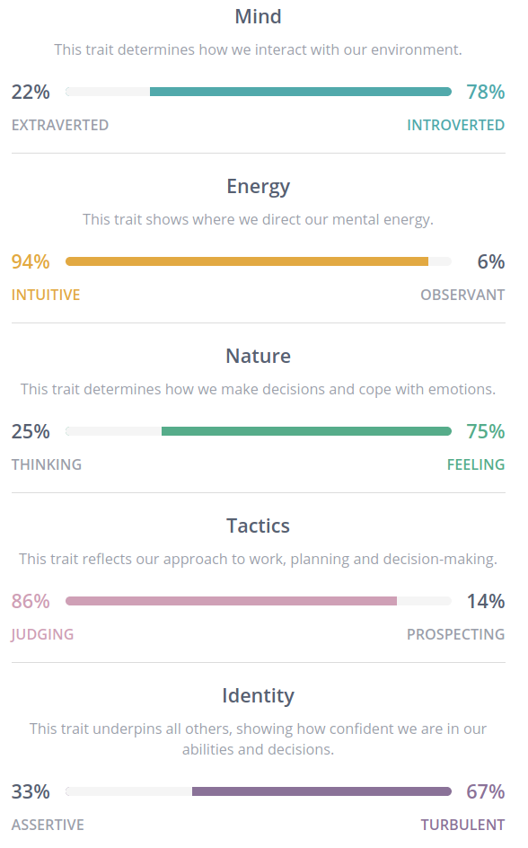
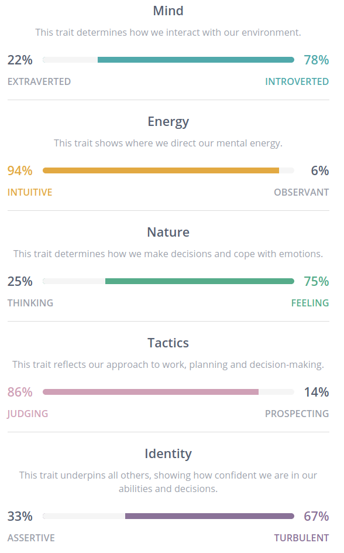
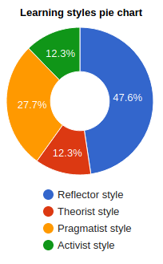
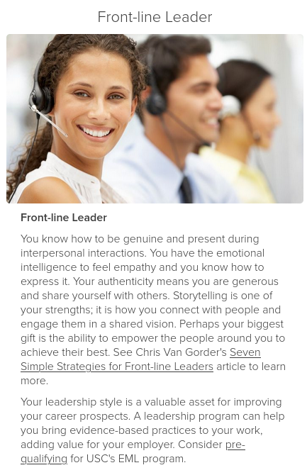

|
Myer-Briggs Personality TestWhat do the results of these tests mean for you? For me the results of the Myer-Briggs test were seemingly quite accurate. The advocate INFJ-T personality type spotlighted my sense and struggle with attempting to be idealistic while also pragmatic and true to myself. The test particularly described some sore point that will take some work to change, like working too hard for too long without rest, and trying to improve too much too quickly. How do you think these results may influence your behaviour in a team? The test articulated a work pattern that I have often felt but been blinded to the recurrent nature of: Burnout. In my normal work process I tend to dedicate 100% of effort 100% of the time until I get so exhausted that I need to reduce my whole lifestyle to 10% for a period of time until I recoup and ramp my effort back up to 100%. In future team situations I will definitely attempt to alter this behaviour to a sustainable level where burnout is prevented and I can maintain a solid work pattern that suits the project. How should you take this into account when forming a team? When forming a team I aim to take a role that is supervisory so that I am responsible for a significant contingent of work. While I know that I can handle taking the responsibility of the workload, I feel that I am also able to pragmatically dissect the work for others into smaller portions and assess the skill levels of my team members to be able to complete the tasks on time. I will have to be more conscious of the amount of work I take and not to take too much of what could more effectively be delegated. Take the Test |
|  |
Learning Styles TestWhat do the results of these tests mean for you? For me the results of the learning style test have shown me that I should focus more on proactively problem solving, rather than instituting a solution and reflecting on the result afterwards. I may be able to save myself work by thinking out better alternative solutions to problems before picking a solution to start on. How do you think these results may influence your behaviour in a team? I think that these results show me that I should attempt to contribute more of my ideas in a team setting. Sometimes I am unhappy with the progress of a project but don’t make my feelings known. The result of such behaviour has in the past impacted my enthusiasm towards a solution because I feel it is not the best solution available. How should you take this into account when forming a team? When forming a team I should take into account the attitudes of potential team members and how responsive they are to differing ideas and speculations. It would serve the project better for me to be working with team members who are receptive and I feel will comfortably receive my suggestions or at least be able to logically describe the benefits of the chosen solution. Take the Test |
|  |
Interactive Leadership Style AssessmentWhat do the results of these tests mean for you? For me the results of this test displayed my focus on trying to be personable while also leading or supervising among my work teams. I feel that the leadership test showed how I target my attention towards being there for my team during the good and bad projects, and am also able to encourage and keep a good rapport with my teammates. How do you think these results may influence your behaviour in a team? In a team I think I will now focus more on how I can better connect with people and empower them to do their best. In the future I will strive to place myself in more front-line leadership roles and focus on being there for team members in need. How should you take this into account when forming a team When forming a team I will put my hand up for leadership positions, especially when other members feel uncomfortable in the role. I will also make an effort to be available to team members whenever they are having issues or are just finding the workload too intensive. Take the Test |